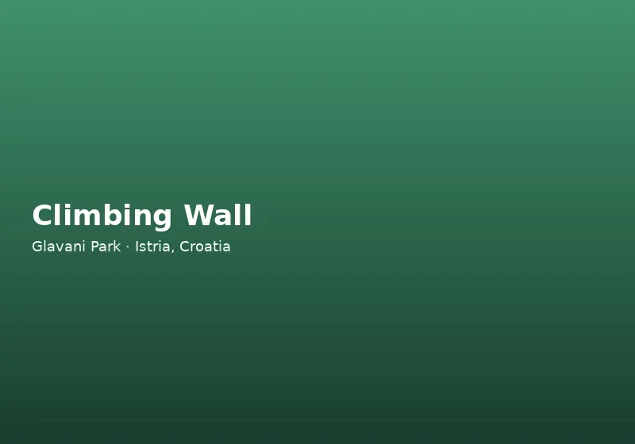

Vrijednost obrazovanja na otvorenom u Istri
Nastava u učionici temelj je obrazovanja, ali neke lekcije najdublje zauzimaju mjesto na otvorenom — gdje učenici procjenjuju stvarni rizik, podržavaju kolege pod blagim pritiskom i otkrivaju fizičke sposobnosti o kojima nisu znali. Blaga klima i pristupačna geografija Istre čine regiju idealnom za školske ekskurzije, bilo da ste domaća škola ili međunarodna razmjena.
Glavani Park nudi strukturirano okruženje za školski izleti u Istri bez izazova nesuperviziranih šetnji šumom ili neformalnih plažnih dana. Svaku aktivnost vode educirani instruktori s CE certificiranom opremom, stazama prilagođenim dobi i jasnim sigurnosnim obukama prije napuštanja tla.
Škole iz cijele Istre — Pula, Poreč, Rovinj, Labin — redovito koriste Glavani Park kao destinaciju za završni razred ili sportske dane. Međunarodne škole s kampusom u Istri cijene bilingualne instruktore i mogućnost prilagodbe programa na engleskom. Učenici uče da je rizik u kontroliranom okruženju nešto što se procjenjuje i upravlja, a ne samo nešto čega treba bojati se.
Edukativni programi u Glavani Parku
Školski posjeti mogu naglasiti različite ishode ovisno o dobi i kurikulumu. Učenici nižih razreda koriste žutu stazu na 2 m — razvija ravnotežu, koordinaciju i samopouzdanje uz dovoljno blizine tla da nastavnici promatraju i bodre. Srednjoškolci pristupaju plavoj stazi na 6 m sa ziplineom od 113 m ili crnoj na 10 m za napredniji fizički odgoj i module vodstva.
Prirodne teme uključuju procjenu rizika (prepoznavanje opasnosti, slijede naredbi, pravilna uporaba OZO), fiziku i inženjerstvo (kako rade harnes, škripci i sustavi usporavanja), ekološku svijest (ekologija hrastove šume, održivi turizam) i socijalni razvoj (podrška vršnjacima, komunikacija pod izazovom, inkluzivno sudjelovanje).
Nastavnici dobivaju informacije prije posjeta — sigurnosni postupci, preporučeni omjeri nadzora, odjeća i prijedlozi aktivnosti prije i poslije izleta. Nazovite +385 98 224 314 za veličinu grupe, datume i prilagodbu programa.
Integracija s kurikulumom fizike može uključivati razgovor o silama na zipline kolici, trenju i gravitaciji na Quick Jumpu te statičkoj opterećenosti mostova od užadi. Biologija i geografija mogu obuhvatiti vrste drveća u parku i održivo gospodarenje šumom. Nastavnici dobivaju konkretne teme za domaću zadaću odmah nakon povratka autobusom u školu.
Sigurnost i nadzor učeničkih grupa
Sigurnost učenika neprihvatljiva je za kompromis. Glavani Park provodi dnevne inspekcije opreme, kontinuirani osigurač na visokim stazama i nadzor instruktora na svakom polazištu. Svaki učenik dobiva kacigu i harnes koje prilagođava osoblje te verbalnu obuku primjerenu dobi i jeziku. Dostupne su obuke na hrvatskom i engleskom.
Škole zadržavaju vlastitu dužnost brige uz instruktore parka — tipično jedan nastavnik ili roditelj po manjoj skupini uz osoblje parka. Minimalna visina i zdravstveni uvjeti vrijede za određene atrakcije; komuniciraju se pri rezervaciji kako bi učitelji postavili realna očekivanja.
Detalji certifikata i operativnih standarda objavljeni su na stranici o sigurnosti. Park preporučuje Turistička zajednica Istre i ugostio je škole iz Hrvatske i susjednih zemalja.
Sigurnosni protokoli za škole uključuju jasnu točku okupljanja, popis prisutnih učenika i koordinaciju s vozačem autobusa oko vremena dolaska i odlaska. Za veće škole s više razreda moguće je organizirati rotaciju kroz staze kako bi svaki učenik imao smislenu aktivnost bez prevelike gužve. Glavani Park ponosan je što je dio obrazovnog krajolika Istre i svake godine proširuje suradnju s novim školama.
Logistika školskih ekskurzija u Istri
Glavani Park, Glavani 10, 52207 Barban, između Vodnjanja (10 km) i Barbana (6 km). Parkiranje autobusa i minibuseva besplatno je na lokaciji. Od Pule oko trideset minuta; od Rovinja oko četrdeset pet. Park radi 9–17 h, posljednji ulaz 15 h — većina škola dolazi u 9:30 na posjet od 3–4 sata.
Učenici trebaju zatvorene sportske cipele, udobnu odjeću i zaštitu od sunca ljeti. Užinu možete pojesti u osjenčanom području za piknik; pića i sladoled prodaju se u parku. Toaleti i osnovni sadržaji blizu su blagajne.
Kombinirajte posjet kulturnom zaustavljanju u Vodnjanu (zvonik, mumificirani svetci) ili Barbanu (srednjovjekovne zidine) za cjelodnevnu ekskurziju koja spaja aktivnost i baštinu.
Rezervirajte školski izlet u Glavani Park
Najava je obavezna za školske grupe. Navedite procijenjeni broj učenika, dob, željeni datum i posebne zahtjeve (mješovite sposobnosti, gledatelji u kolicima, jezične preferencije). Potvrdit ćemo raspored instruktora, vrijeme i cijene.
Za omladinske klubove, skautske grupe i ljetne kampove u istarskim kampovima vrijede slični paketi — pogledajte partnerski program za pružatelje smještaja. Bilo da planirate jedan razredni izlet ili godišnju tradiciju avanture, Glavani Park pruža edukativno iskustvo koje učenici spominju i nakon povratka u učionicu.
Nastavnici izvještavaju da rasprave nakon posjeta — crteži sustava škripaca, refleksivni eseji o prevladavanju straha ili rasprave o riziku i nagradi — produžuju vrijednost poludnevnog izleta daleko izvan vožnje autobusom doma.
Školski izleti u Glavani Park mogu uključivati i natjecateljski element — koji razred brže završi plavu stazu uz poštivanje sigurnosti — što dodaje zdravu dinamiku bez stvarnog rizika. Nastavnici fizičkog odgoja mogu povezati posjet s ocjenjivanjem napredka u koordinaciji i hrabrosti tijekom semestra. Za škole s učenícima s posebnim potrebama kontaktirajte nas unaprijed kako bismo predložili format sudjelovanja prilagođen mogućnostima svakog učenika.
Škole koje ponavljaju izlet svake godine grade tradiciju — stariji učenici pomažu mlađima na žutoj stazi, a nastavnici koriste poznati format za bržu organizaciju. Glavani Park pruža stabilan edukativni partner s jasnim sigurnosnim protokolima koji se ne mijenjaju iz sezone u sezonu, što olakšava odobrenje stručnjaka u školi i roditelja. Kontaktirajte nas na početku školskog polugodišta za rezervaciju proljećnih i jesenskih termina prije nego kalendar popuni.